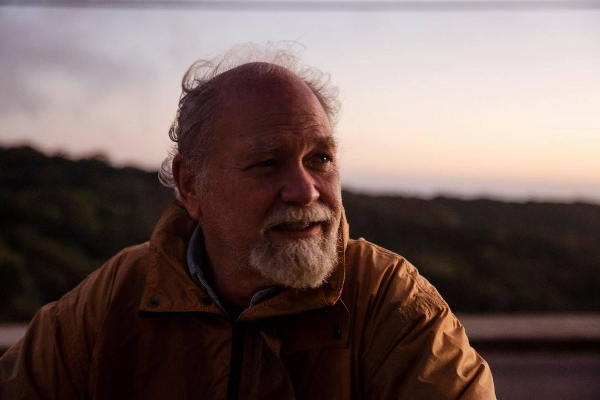
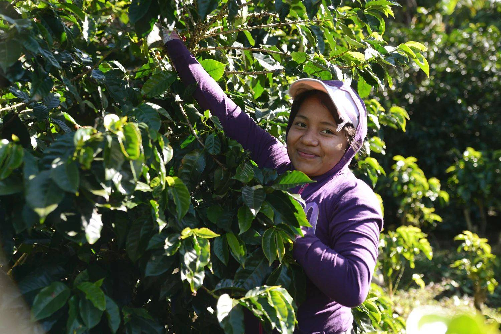
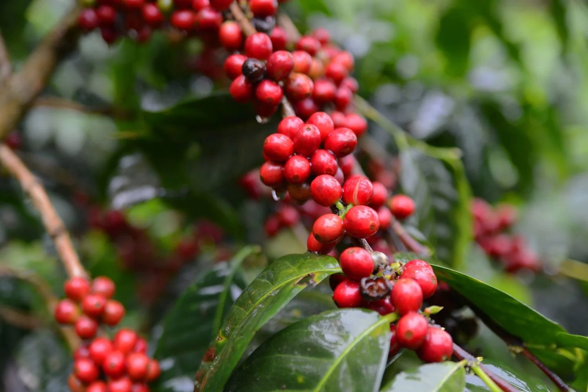
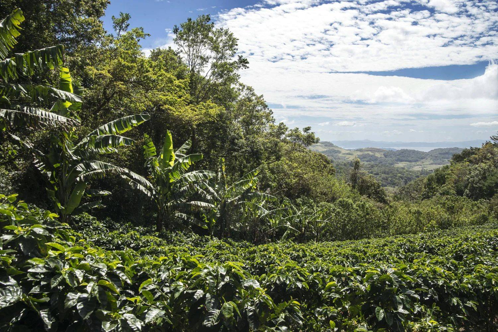
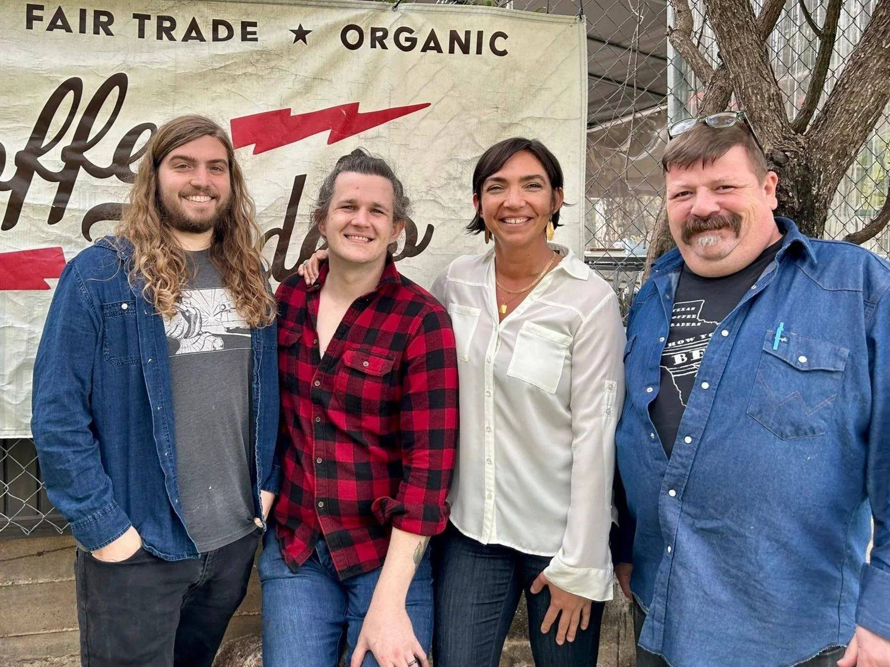

Our story · since 1994
It all started with a terrible cup of coffee.
RC Beall drank the worst coffee of his life in an all-night diner in Montana, and wondered whether roasting a great cup could be a living. Forty-some years, two states and one Costa Rican cloud forest later, here we are.

- 1981
Montana Coffee Traders
RC Beall starts roasting with an old roaster and five bags of green beans found in a Montana cabin: the “Est. 1981” on our logo.
- 1990
Monteverde, Costa Rica
RC meets Carlos Vargas of the Santa Elena co-op, pays well above market plus $1 a pound back to the farm, one of the first fair-trade relationships in the U.S.
- 1994
Texas Coffee Traders
RC comes home to Texas, marries his childhood friend Beth, and together they open Texas Coffee Traders in Austin.
- E 4th St
Behind the red door
For decades the East 4th Street warehouse was our home and an Eastside landmark. Our 4th Street Blend is a tribute to it.
- 2024
Three new East Austin homes
Roastery and warehouse on Wilcab Rd, cafe and retail on E 7th St, Coffee Techs on Airport Blvd.
- Today
Still roasting every weekday
Fresh beans for our cafe, your kitchen and businesses across Central Texas.
Café Monteverde · direct & fair
Our farm family in the cloud forest
Through Coffee Traders and Café Monteverde, eleven local families formed Life (Low Impact for Earth) Monteverde, with education programs in sustainability, conservation and agriculture. Half the farm is forest, and more than 500 trees are planted every year as corridors for birds, sloths and pumas.
We buy Monteverde coffee direct from the farmers, always at a premium regardless of the market, so every bag supports the community directly.
Shop Café Monteverde


Fair Trade®, on both sides of the border
Good coffee, done right
For farmers
Fair Trade and direct trade coffees that pay farmers enough to support their families and invest in their communities.
For our crew
On this side of the border that means living wages, health benefits, paid time off and retirement plans.
For Austin
A dollar from every bag of Fresh Pick goes to HAAM (Health Alliance for Austin Musicians), plus the Equality Market for Equality Texas and donations to local nonprofits.
For the planet
We switched to a more sustainable roaster (that’s why some beans look a touch lighter) with the same quality and consistency.

The people
Friendly faces, guaranteed
Baristas who remember your order, a coffee education and quality-control lead who films our at-home brew guides, and a sales team that picks up the phone. Women-owned and LGBTQ+ friendly, and a safe space for everyone.
In the press
People have been talking
- Tasting TableThe Absolute Best Coffee Roasters in Every State: Texas pick (2023)
- YelpTop 100 Texas Restaurants 2022
- RedfinMust-Try Cafes and Coffee Shops in Austin
- Daily Coffee NewsTexas Coffee Traders opens the state's first SCA-certified campus (2017)
- Coffee ReviewWomen in coffee: why it matters that she's the roaster
- The Daily TexanFair trade purchases fight labor trafficking worldwide
Also a 2026 Austin Chronicle Best of Austin finalist for Best Coffee Shop.